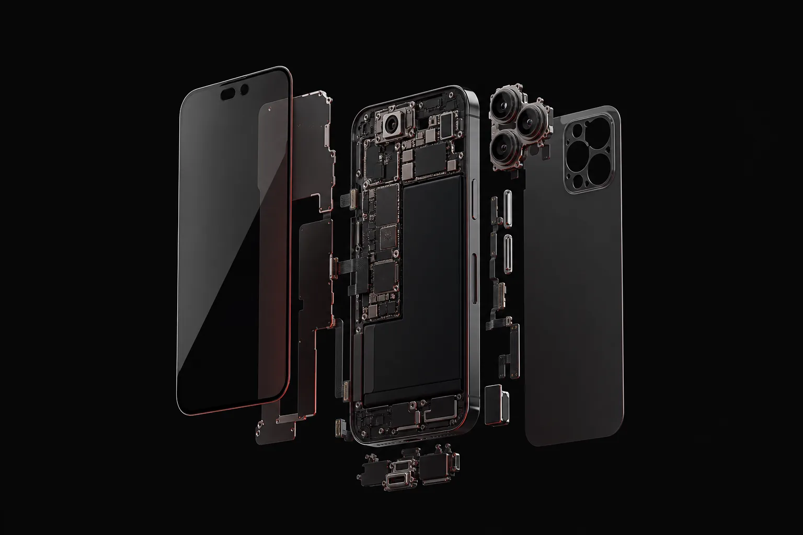

Identifier
Modèle, symptômes et état général de l’appareil.
Autonomie en chute, extinction soudaine, chauffe inhabituelle ou batterie gonflée : faites contrôler l’appareil avant de remplacer la pièce.
Prix finaux, pièce et main-d’œuvre comprises, 25 € déjà déduits (tarifs de septembre 2026, selon le modèle).

Modèle, symptômes et état général de l’appareil.
Nous vérifions que la batterie est bien la cause du problème.
Prix, disponibilité et délai sont annoncés avant intervention.
Une autonomie réduite peut venir de l’usure de la batterie, mais aussi d’une application active en arrière-plan, d’une mauvaise couverture réseau, d’un connecteur encrassé ou d’un défaut de charge. Un contrôle évite donc de remplacer une pièce inutilement.
Indiquez la marque, le modèle exact et les symptômes : pourcentage qui chute rapidement, extinction soudaine, chauffe ou redémarrage. Une batterie gonflée est un cas particulier : éteignez l’appareil si possible, ne le rechargez plus et apportez-le sans exercer de pression sur l’écran ou la coque.
Sur iPhone, indiquez si possible l’état de santé de la batterie affiché dans les réglages. Sur Samsung Galaxy, précisez la référence exacte du modèle : deux téléphones d’apparence proche peuvent utiliser des batteries différentes. L’équipe confirme la pièce, le prix et le délai avant votre accord.
Éteignez l’appareil si possible, ne le rechargez pas et ne tentez pas de le percer ou de l’aplatir.
21 rue Gambetta, 71000 Mâcon. Accueil sans rendez-vous.
Une autonomie en forte baisse, des extinctions soudaines, une chauffe inhabituelle ou une batterie gonflée justifient un contrôle. Une application, le réseau ou un défaut de charge peuvent aussi être en cause.
Le prix dépend de la marque, du modèle et de la disponibilité de la pièce. Le devis est gratuit, sans engagement, et le tarif est confirmé avant intervention.
Non. Éteignez l’appareil si possible et ne le rechargez plus. N’essayez pas de percer, plier ou comprimer la batterie.
Le remplacement de batterie ne nécessite normalement pas d’effacer les données. Une sauvegarde récente reste toutefois recommandée avant toute intervention.